¿Existen diferencias estadísticamente significativas en el valor de contratos entre grupos?
| # | Hipótesis | Dataset | F | p-value | Decisión |
|---|---|---|---|---|---|
| 1 | ¿El valor de contratos difiere entre departamentos? | Consolidado (SECOP I + II + Integrado, 133,371 reg... | 525.4773 | < 2.2e-16 | Rechazar H₀ |
| 2 | ¿El valor de contratos difiere según la modalidad de selección? | Consolidado (SECOP I + II + Integrado, 133,371 reg... | 1381.1753 | < 2.2e-16 | Rechazar H₀ |
| 3 | ¿El valor de contratos difiere según el tipo de contrato? | Consolidado (SECOP I + II + Integrado, 133,371 reg... | 2021.9282 | < 2.2e-16 | Rechazar H₀ |
| 4 | ¿El valor de contratos difiere entre fuentes SECOP (I vs II vs Integrado)? | Consolidado (SECOP I + II + Integrado, 133,371 reg... | 5114.5758 | < 2.2e-16 | Rechazar H₀ |
| 5 | ¿El valor de contratos difiere según el sector de gasto? (SECOP II) | SECOP II (48,310 registros con sector clasificado)... | 81.8898 | < 2.2e-16 | Rechazar H₀ |
| 6 | ¿La modalidad afecta el valor de forma diferente según el departamento? | Consolidado (SECOP I + II + Integrado, 133,371 reg... | 261.8604 | < 2.2e-16 | Rechazar H₀ |
| 7 | ¿La combinación modalidad × tipo de contrato afecta el valor? (SECOP II) | SECOP II (48,310 registros)... | 304.4777 | < 2.2e-16 | Rechazar H₀ |
El valor promedio de contratos es igual en todos los departamentos de Colombia.
Al menos un departamento tiene un valor promedio de contratos diferente.
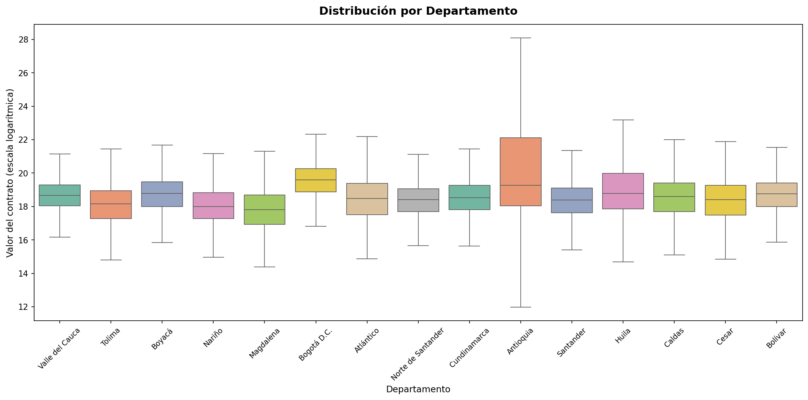
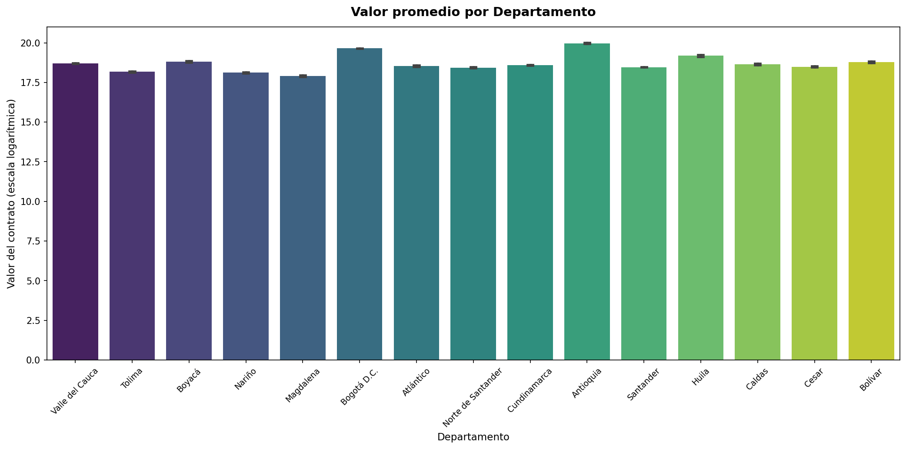
| Grupo | Valor promedio | |
|---|---|---|
| Antioquia | $469.3 M | |
| Bogotá D.C. | $342.3 M | |
| Vaupés | $244.0 M | |
| Chocó | $216.4 M | |
| Huila | $214.8 M | |
| Caquetá | $176.9 M | |
| Córdoba | $164.8 M | |
| Boyacá | $148.4 M | |
| Cauca | $148.1 M | |
| Bolívar | $143.4 M | |
| Casanare | $139.5 M | |
| San Andrés, Providencia Y Santa Catalina | $138.8 M | |
| Guainía | $138.1 M | |
| Valle del Cauca | $131.6 M | |
| Meta | $127.8 M | |
| Risaralda | $126.5 M | |
| Caldas | $124.4 M | |
| Cundinamarca | $119.7 M | |
| La Guajira | $117.3 M | |
| Guaviare | $116.7 M | |
| Amazonas | $116.0 M | |
| Atlántico | $110.9 M | |
| Cesar | $107.3 M | |
| Vichada | $105.2 M | |
| Santander | $104.6 M | |
| Putumayo | $101.8 M | |
| Norte de Santander | $101.7 M | |
| Sucre | $90.9 M | |
| Quindío | $85.4 M | |
| Tolima | $78.0 M | |
| Nariño | $73.6 M | |
| Arauca | $59.8 M | |
| Magdalena | $59.7 M |
El valor promedio es igual para todas las modalidades (Contratación Directa, Licitación Pública, Mínima Cuantía, etc.).
Al menos una modalidad tiene un valor promedio diferente.
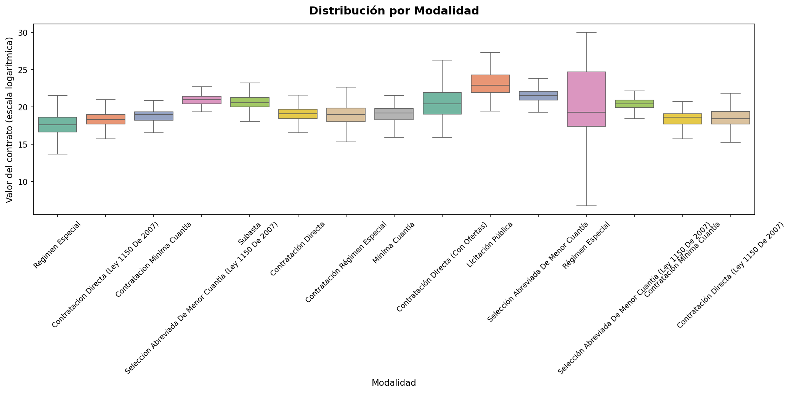
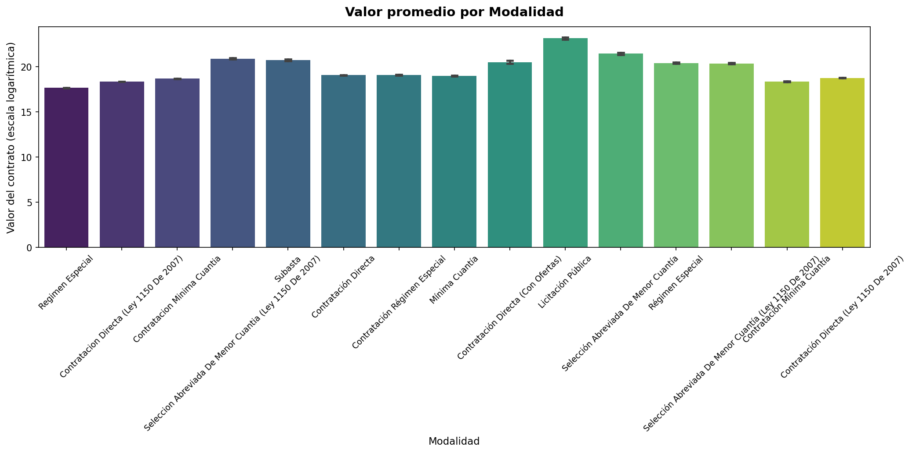
| Grupo | Valor promedio | |
|---|---|---|
| Licitación Pública Obra Publica | $27.76 mil M | |
| Selección Abreviada Servicios De Salud | $17.95 mil M | |
| Concurso De Méritos Con Lista Corta | $12.97 mil M | |
| Licitacion Obra Publica | $11.86 mil M | |
| Licitación Pública | $11.47 mil M | |
| Licitación Obra Pública | $10.49 mil M | |
| Licitacion Publica | $7.59 mil M | |
| Seleccion Abreviada Menor Cuantia Sin Manifestacion Interes | $2.38 mil M | |
| Selección Abreviada Subasta Inversa | $2.17 mil M | |
| Concurso De Méritos Abierto | $2.14 mil M | |
| Selección Abreviada De Menor Cuantía | $2.09 mil M | |
| Contratación Régimen Especial (Con Ofertas) | $1.31 mil M | |
| Contratos Y Convenios Con Más De Dos Partes | $1.21 mil M | |
| Seleccion Abreviada De Menor Cuantia (Ley 1150 De 2007) | $1.21 mil M | |
| Concurso De Meritos Abierto | $1.14 mil M | |
| Subasta | $1.02 mil M | |
| Contratación Directa (Con Ofertas) | $823.1 M | |
| Régimen Especial | $745.1 M | |
| Selección Abreviada De Menor Cuantía (Ley 1150 De 2007) | $708.3 M | |
| Contratación Directa Menor Cuantía | $664.6 M | |
| Contratación Régimen Especial | $199.0 M | |
| Contratación Directa | $192.9 M | |
| Mínima Cuantía | $178.8 M | |
| Contratos Y Convenios Con Mas De Dos Partes | $177.8 M | |
| Contratación Directa (Ley 1150 De 2007) | $143.0 M | |
| Contratacion Minima Cuantia | $131.6 M | |
| Contratacion Directa (Ley 1150 De 2007) | $95.4 M | |
| Contratación Mínima Cuantía | $95.3 M | |
| Regimen Especial | $47.0 M |
El valor promedio es igual para todos los tipos de contrato (Obra, Consultoría, Suministro, etc.).
Al menos un tipo de contrato tiene un valor promedio diferente.
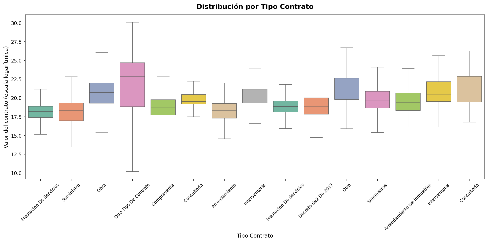
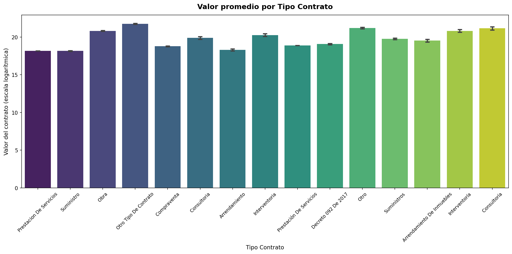
| Grupo | Valor promedio | |
|---|---|---|
| Crédito | $260.06 mil M | |
| Credito | $5.49 mil M | |
| Otro Tipo De Contrato | $2.79 mil M | |
| Otro | $1.58 mil M | |
| Consultoría | $1.55 mil M | |
| Obra | $1.10 mil M | |
| Interventoría | $1.10 mil M | |
| Seguros | $816.2 M | |
| Interventoria | $629.5 M | |
| Consultoria | $430.2 M | |
| Suministros | $380.1 M | |
| Arrendamiento De Inmuebles | $301.9 M | |
| No Definido | $299.7 M | |
| Acuerdo Marco | $203.0 M | |
| Decreto 092 De 2017 | $191.0 M | |
| Prestación De Servicios | $158.7 M | |
| Arrendamiento De Muebles | $148.8 M | |
| Compraventa | $141.9 M | |
| Comodato | $131.2 M | |
| Concesion | $110.6 M | |
| Arrendamiento | $88.5 M | |
| Prestacion De Servicios | $77.7 M | |
| Suministro | $76.9 M |
El valor promedio es igual entre SECOP I, SECOP II y SECOP Integrado.
Al menos una fuente tiene un valor promedio diferente.
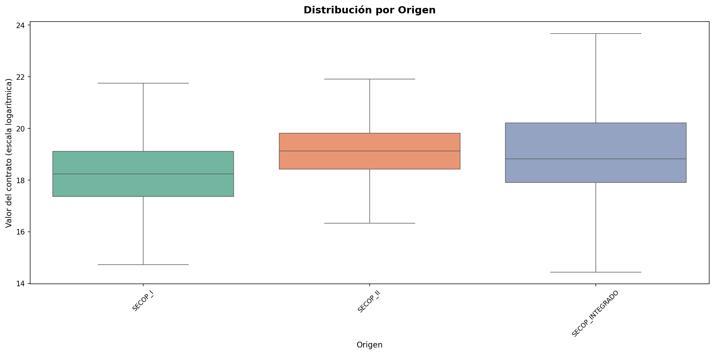
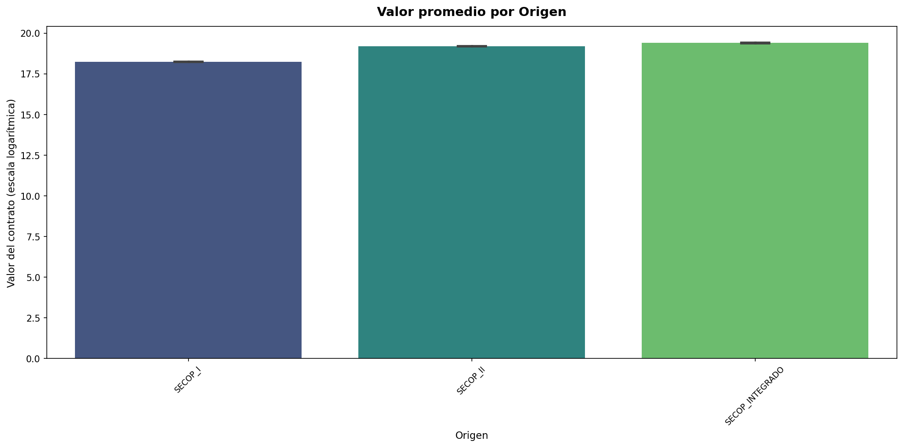
| Grupo | Valor promedio | |
|---|---|---|
| SECOP_INTEGRADO | $270.0 M | |
| SECOP_II | $218.8 M | |
| SECOP_I | $83.9 M |
El valor promedio es igual en todos los sectores (Educación, Salud, Transporte, Minas, etc.).
Al menos un sector tiene un valor promedio diferente.
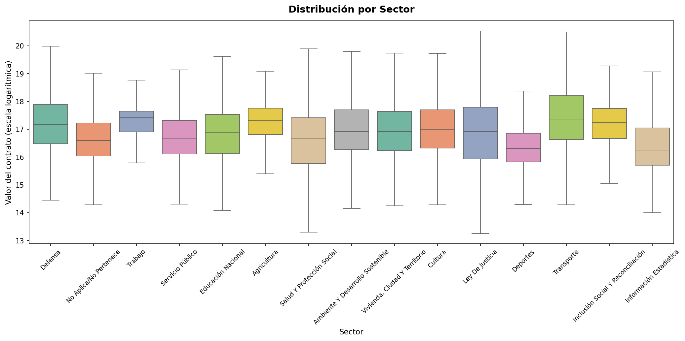
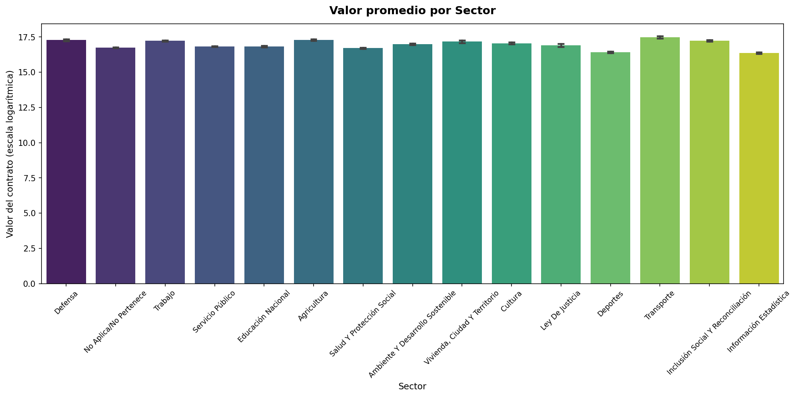
| Grupo | Valor promedio | |
|---|---|---|
| Minas Y Energía | $48.4 M | |
| Transporte | $39.5 M | |
| Presidencia De La República | $38.2 M | |
| Tecnologías De La Información Y Las Comunicaciones | $35.6 M | |
| Agricultura | $32.1 M | |
| Defensa | $32.0 M | |
| Planeación | $30.5 M | |
| Inclusión Social Y Reconciliación | $30.4 M | |
| Relaciones Exteriores | $30.4 M | |
| Trabajo | $30.2 M | |
| Hacienda Y Crédito Público | $29.6 M | |
| Interior | $28.8 M | |
| Vivienda, Ciudad Y Territorio | $28.7 M | |
| Ciencia Tecnología | $27.9 M | |
| Industria | $26.8 M | |
| Cultura | $25.5 M | |
| Ambiente Y Desarrollo Sostenible | $24.0 M | |
| Ley De Justicia | $22.1 M | |
| Educación Nacional | $20.4 M | |
| Servicio Público | $20.2 M | |
| No Aplica/No Pertenece | $18.6 M | |
| Salud Y Protección Social | $18.1 M | |
| Deportes | $13.3 M | |
| Información Estadística | $12.8 M |
No hay interacción entre modalidad y departamento: el efecto de la modalidad sobre el valor es el mismo en todos los departamentos.
Existe interacción: el efecto de la modalidad sobre el valor varía según el departamento.
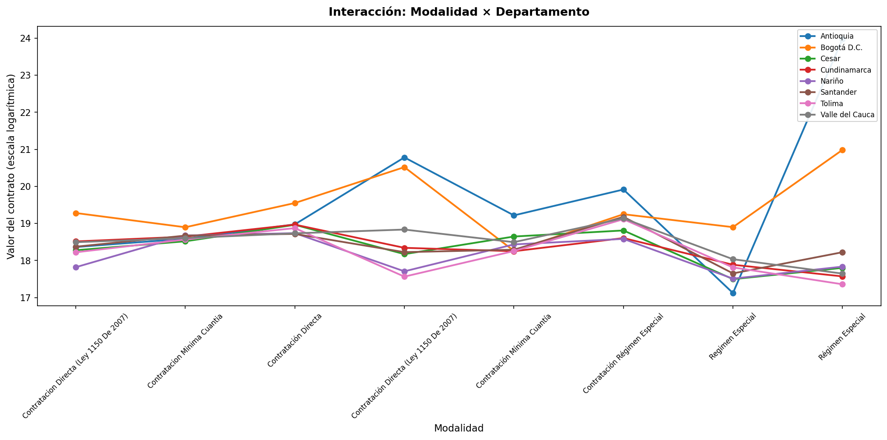
No hay interacción entre modalidad y tipo de contrato sobre el valor.
La combinación de modalidad y tipo de contrato afecta el valor más allá de cada factor individual.
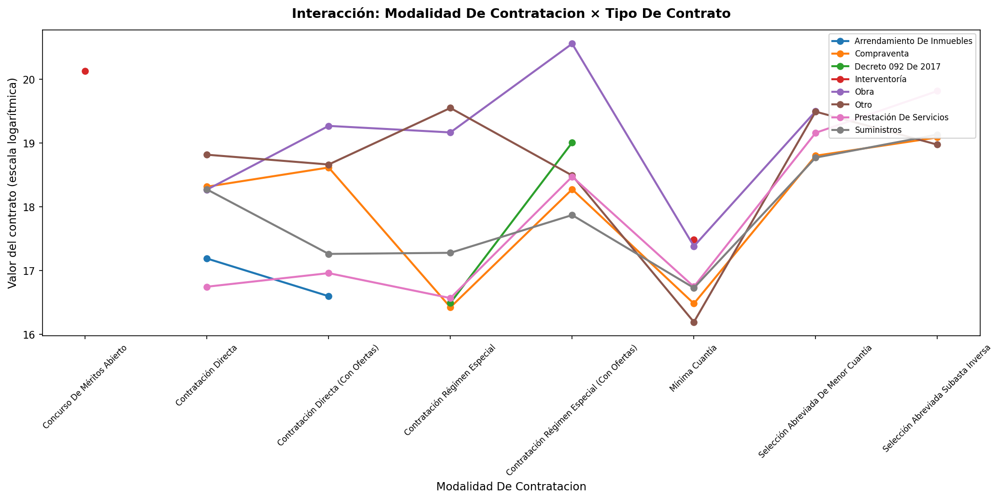